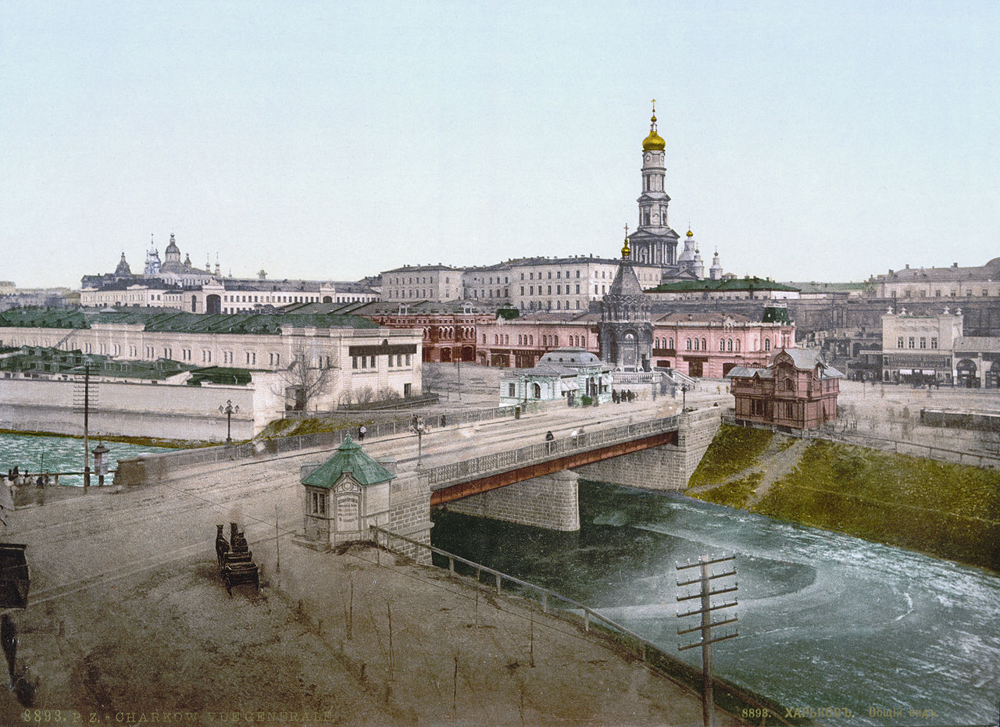
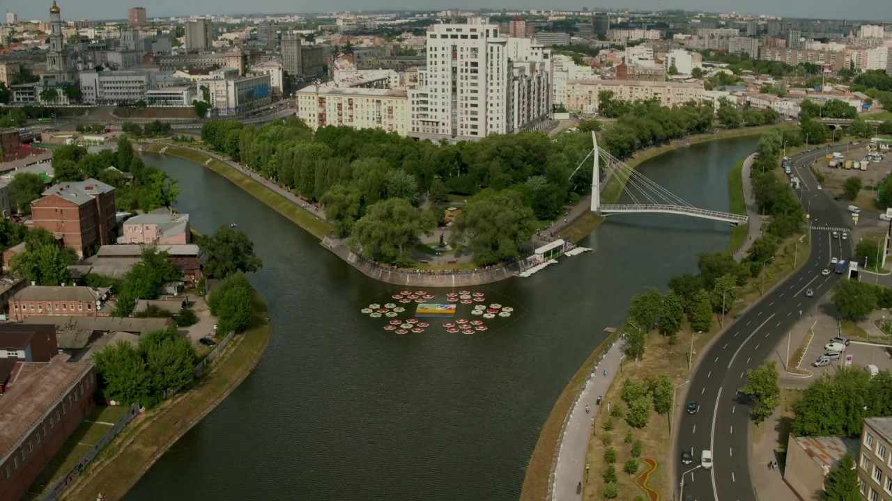
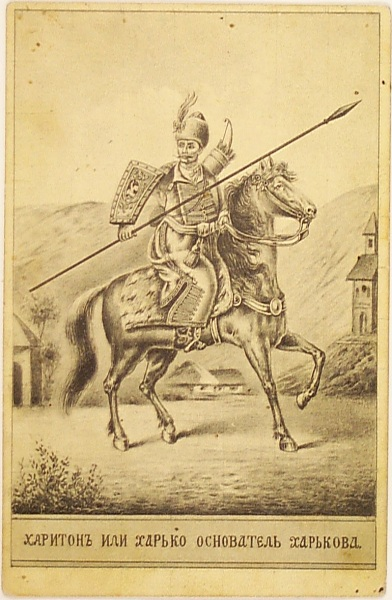
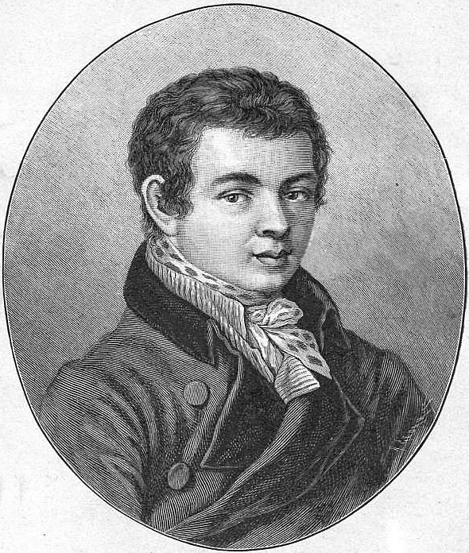

Галерея

Місто у XIX столітті

Стрілка річок Лопань і Харків. У місті 58 мостів.

Козак Харько — легендарний «засновник» міста

Василь Каразін — український вчений та винахідник, засновник Харківського університету